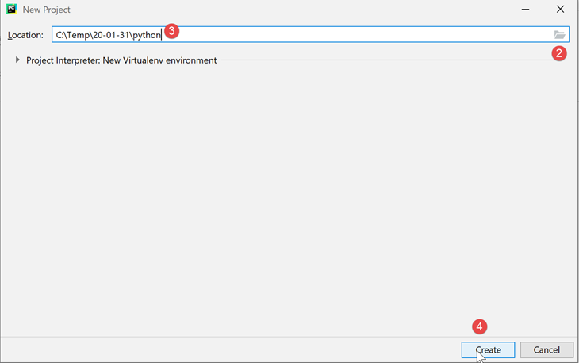
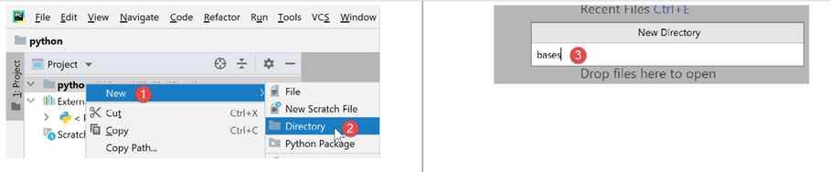
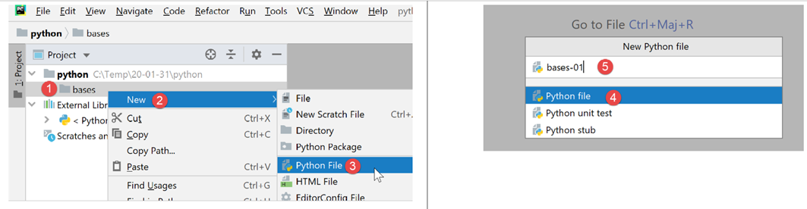
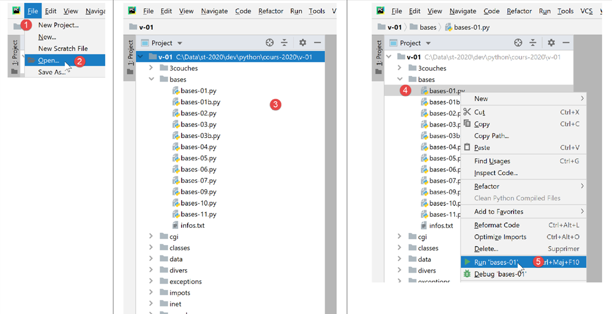
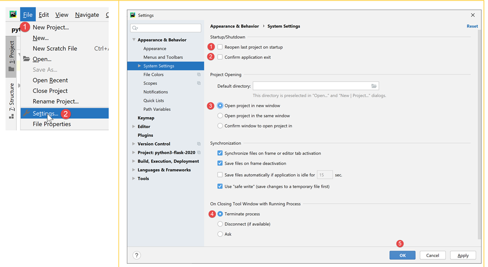
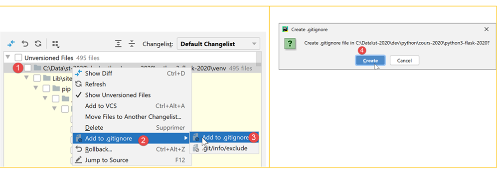
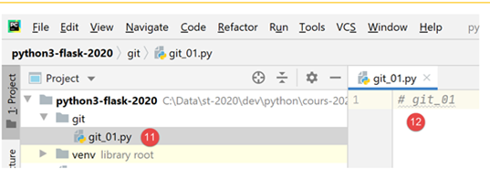
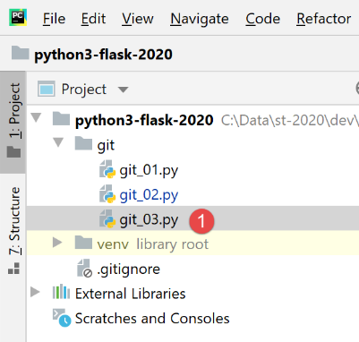

2. Installazione di un ambiente di lavoro
2.1. Python 3.8.1
Gli esempi contenuti in questo documento sono stati testati con l'interprete Python 3.8.1 disponibile all'indirizzo URL |https://www.python.org/downloads/| (febbraio 2020) su un computer con sistema operativo Windows 10:

L'installazione di Python crea la struttura di file [1] e il menu [2] nell'elenco dei programmi:

- [3-4]: due interpreti Python interattivi;
- [5]: la documentazione di Python;
- [6]: la documentazione dei moduli Python;
Non useremo l’interprete Python interattivo. È sufficiente sapere che gli script di questo documento potrebbero essere eseguiti con tale interprete. Utile per testare il funzionamento di una funzionalità Python, lo è meno per gli script destinati a essere riutilizzati. Ecco un esempio con l’opzione [4] sopra indicata:

Il prompt >>> consente di inserire un'istruzione Python che viene eseguita immediatamente. Il codice digitato sopra ha il seguente significato:
Righe:
- 1: inizializzazione di una variabile. In Python non si dichiara il tipo delle variabili; queste assumono automaticamente il tipo del valore che viene loro assegnato. Tale tipo può cambiare nel corso del tempo;
- 2: visualizzazione del nome. 'nom=%s' è un formato di visualizzazione in cui %s è un parametro formale che indica una stringa di caratteri. nom è il parametro effettivo che verrà visualizzato al posto di %s;
- 3: il risultato della visualizzazione;
- 4: visualizzazione del tipo della variabile nome;
- 5: la variabile nom è qui di tipo class. Con Python 2.7 avrebbe il valore <type 'str'>;
Ora apriamo una console di Windows:

Il fatto che sia stato possibile digitare [python] al posto di [1] e che sia stato trovato l'eseguibile [python.exe] dimostra che quest'ultimo si trova nella directory PATH del computer Windows. Questo è importante perché significa che gli strumenti di sviluppo Python saranno in grado di individuare l’interprete Python. È possibile verificarlo in questo modo:

- in [2], si esce dall'interprete Python;
- in [3], il comando che visualizza il PATH degli eseguibili del computer Windows;
- con [4], si vede che la cartella dell’interprete Python 3.8 fa parte di PATH;
2.2. IDE PyCharm Community
2.2.1. Introduzione
Per compilare ed eseguire gli script di questo documento, abbiamo utilizzato l'editor [PyCharm] edizione Community disponibile (febbraio 2020) su URL |https://www.jetbrains.com/fr-fr/pycharm/download/#section=windows| :

Scaricate IDE PyCharm Community [1-3] e installatelo.
Avviamo IDE PyCharm e creiamo un primo progetto Python:


- in [2-4], create un nuovo progetto;
IDE PyCharm mostra il progetto creato nella forma seguente:

- in [2-3], esaminiamo le proprietà di IDE;

- in [4], l'interprete Python che verrà utilizzato per il progetto;
- in [5], un elenco a discesa degli interpreti disponibili;
- in [6], si seleziona l’interprete scaricato nel paragrafo |Python 3.8.1|;

- in [7], l'interprete selezionato;
- in [8], l'elenco dei pacchetti disponibili con questo interprete. I pacchetti contengono moduli che gli script Python possono utilizzare. Sono disponibili centinaia di moduli;
Iniziamo creando una cartella in cui inseriremo il nostro primo script Python:

- fare clic con il tasto destro del mouse sul progetto, quindi selezionare [1-2] per creare una cartella;
- in [3], digitare il nome della cartella: verrà creata nella cartella del progetto;
Quindi creiamo uno script Python:

- fare clic con il tasto destro sulla cartella [bases], quindi su [1-3];
- in [4-5], specificare il nome dello script;
Scriviamo il nostro primo script:

-
in [3], scriviamo il seguente script:
- righe 1, 3: i commenti iniziano con il simbolo #;
- riga 2: inizializzazione di una variabile. Python non dichiara il tipo delle sue variabili;
- riga 4: visualizzazione sullo schermo. La sintassi utilizzata qui è [format % données] con:
- formato: nome=%s dove %s indica la posizione di una stringa di caratteri. Questa si troverà nella parte [données] dell’espressione;
- dati: il valore della variabile [nom] sostituirà il formato %s nella stringa di formato;
- con [4-5], si riformatta il codice secondo le raccomandazioni dell'ente che gestisce Python;
Lo script viene eseguito con un clic destro sul codice [6]:

- in [7], il comando eseguito;
- in [8], il risultato dell'esecuzione;
Per eseguire lo script del documento, scaricate il codice da URL |https://tahe.developpez.com/tutoriels-cours/python-flask-2020/documents/python-flask-2020.rar| e poi in PyCharm procedere come segue:

- in [1-2], apertura di un progetto esistente: selezionare la cartella contenente il codice scaricato;
- in [3], il progetto aperto;
- in [4-5], eseguire uno degli script del progetto;

- in [7-8], i risultati dell'esecuzione;
2.2.2. Ambiente di esecuzione virtuale
Il nostro ambiente di lavoro è ora operativo. Tuttavia, lo modificheremo per scrivere gli script di questo corso. Innanzitutto, modifichiamo la configurazione di Pycharm:

Nella finestra a destra:
- per impostazione predefinita, la casella [1] è selezionata. La deselezioniamo affinché PyCharm non apra per impostazione predefinita l’ultimo progetto aperto, ma ci permetta di scegliere quello da aprire;
- con [2], non si conferma l’uscita da Pycharm quando si chiude la finestra dell’applicazione;
- in [3], i nuovi progetti vengono aperti in un'altra finestra;
- in [4], se si chiude Pycharm mentre un programma è in esecuzione, quest'ultimo viene interrotto;
Chiudiamo ora PyCharm e poi riapriamolo:

- in [1], si crea un nuovo progetto;
- in [2], si indica la cartella del progetto;
- In [3], utilizzare un ambiente virtuale. Un ambiente virtuale è specifico del progetto che si sta creando. Non si confonde con gli ambienti virtuali di altri progetti. Un progetto Python/Flask utilizza numerose librerie esterne che devono essere installate. Un progetto P1 può utilizzare la libreria B nella versione v1, mentre un progetto P2 può utilizzare la stessa libreria B ma nella versione v2. Queste due versioni possono essere più o meno compatibili. Tuttavia, quando si installa una libreria nella versione v2 e la versione v1 è già installata, quest’ultima viene sovrascritta dalla versione v2. Ciò può creare problemi al progetto che utilizzava la versione v1 se la nuova versione v2 non è completamente compatibile con la versione v1. Per evitare questi problemi, si isola ogni progetto in un ambiente virtuale;
- in [4], indicare la cartella in cui verranno archiviate le librerie Python che verranno scaricate nel corso del progetto. Qui abbiamo scelto una cartella [venv] (ambiente virtuale) all’interno della cartella del progetto. Non è obbligatorio farlo;
- in [5], l’interprete Python del progetto. È quello che abbiamo installato nel passaggio precedente;
- in [6], creare il progetto;

- in [7-8], il progetto creato;
- in [9], l’ambiente di esecuzione del progetto, denominato ambiente virtuale;
- in [10], la cartella [site-packages] è la cartella in cui verranno archiviate le librerie scaricate in seguito;
2.2.3. Git
Successivamente, si attiva un software di controllo del codice sorgente. In questo caso si tratterà di Git [1-4]:

Un software di controllo del codice sorgente (VCS: Version Control System) consente di seguire l’evoluzione di un progetto. È possibile effettuare delle «istantanee», tramite un’operazione chiamata commit, del progetto in diversi momenti del suo ciclo di vita. Se si effettuano due commit nei momenti T e T+1, il VCS permette di sapere cosa è cambiato tra le due versioni sottoposte a commit. Normalmente il VCS viene utilizzato da un team di sviluppatori. Questi effettuano i commit del proprio codice una volta che esso è stato debitamente testato. A partire dal VCS, gli altri sviluppatori possono recuperare questo codice convalidato e utilizzarlo.
In questo caso, c’è un solo sviluppatore. L’esperienza dimostra che può capitare di avere un’applicazione che funziona al tempo T e che non funziona più al tempo T+1. In tal caso, si vorrebbe tornare indietro al tempo T per ricominciare da zero. Il VCS consente di farlo ed è per questo motivo che lo useremo qui.
Mostriamo come procedere con Git.

- In [1], selezionare la scheda [Git] (in basso a sinistra);
- in [2], si vede che ci sono 495 file del progetto che non sono sottoposti a controllo di versione da Git. Ciò significa che non faranno parte delle foto del progetto durante i commit;
- in [3], il pulsante di [commit] o pulsante di convalida del progetto. Come già detto, Git acquisisce quindi un’istantanea del progetto e la salva in una cartella [.git] nella directory principale del progetto (non visualizzata da PyCharm ma visibile nell’Esplora risorse di Windows);
Confermiamo il progetto [3] nel suo stato attuale.
- in [4], l’elenco dei file non sottoposti a controllo di versione;
- in [5], tutti questi file non sottoposti a controllo di versione appartengono all’ambiente virtuale [venv];
- in [6], ogni commit deve essere accompagnato da un messaggio. Lo sviluppatore descrive qui le modifiche apportate dalla versione che sta per essere sottoposta a commit rispetto all’ultima versione sottoposta a commit;
Alcune cartelle o file possono essere ignorati da Git. In tal caso, non fanno mai parte del repository. In [5] sopra riportato, facciamo clic con il tasto destro sulla cartella [venv].
- In [1-3], si specifica che la cartella [venv] non deve far parte del repository di Git. L’elenco delle cartelle e dei file ignorati da Git viene inserito in un file denominato [.gitignore] [4];


- dopo l’operazione precedente, tutti i file della cartella [venv] scompaiono dall’elenco dei file non sottoposti a controllo di versione. Rimane solo il file [.gitignore] appena creato;
- in [5], lo selezioniamo per salvarlo;
- in [6], creiamo un messaggio di commit:
- in [7], si conferma. Viene quindi scattata la foto del progetto;

- in [8-9], il contenuto del file [.gitignore]: una sola riga con il nome della cartella [/venv] che indica che il suo contenuto deve essere ignorato nelle foto;
Vediamo ora a cosa può servirci Git. Per prima cosa, creiamo una cartella [git] (potete usare qualsiasi altro nome – potrà essere eliminata al termine della dimostrazione):

- in [1-5], creiamo una cartella [git];

- in [6-10], si crea uno script Python [git_01];

- in [11-12], lo script contiene solo un commento;
- in [13-14], si crea una copia di [git_01]. A tal fine, selezionare [git_01] e premere Ctrl-C (Copia), quindi (Ctrl-V) (Incolla) e specificare [git_02] come nome del file;

Ora eseguiamo il commit del nostro progetto. Verrà scattata una foto con i due file [git_01, git_02];

- in [1-3], si esegue il commit del progetto;
- in [4], selezioniamo i file non sottoposti a versioning che vogliamo sottoporre a commit, in questo caso tutti;
- in [5], si inserisce il messaggio che identifica il commit;
- in [6], si conferma;

- in [1-2], si conferma il commit;
- in [3], si seleziona la scheda [Log];
- in [4], una vista dei rami del progetto. Qui, un unico ramo denominato [master];
- in [5-6], il commit appena effettuato;
Ora creiamo allo stesso modo uno script [git_03]:

Modifichiamo lo script [git_02] ed eliminiamo lo script [git_01]:

Quindi eseguiamo il commit della nuova versione:

Ora abbiamo due commit nei log:

Quando si seleziona un commit specifico, sulla destra compare l’albero dei file del progetto:

Supponiamo ora che l’ultimo commit ci abbia portato in un vicolo cieco e che si voglia tornare a una situazione corrispondente a uno dei commit precedenti:

- in [1-2], si seleziona il commit allo stato del quale si desidera tornare;
- in [3-5], esistono diverse modalità di reset. Scegliamo la modalità [hard] che riporta allo stato selezionato perdendo le modifiche apportate da allora;

- in [6], è stato ripristinato [git_01] che era stato eliminato;
- in [7-8], si ritrova [git_02] nel suo stato originale senza la modifica che era stata apportata;
Ora modifichiamo [git_02] e aggiungiamo [git_03] e [1-4]:

Ora ripetiamo l'operazione per tornare al commit iniziale:

- in [1-4], si torna alla foto del commit n. 1;
- con [5-6], si sceglie l’opzione [Keep] invece di [Hard]. Queste opzioni non sono facili da comprendere. È quindi necessario provarle:
 |  |
- con [1], il file [git_03] è ancora presente;
- con [2-3], il file [git_02] ha mantenuto le modifiche;
È difficile dire cosa abbia fatto questo [Revert Commit]. Ora eseguiamo il commit della situazione attuale:

- in [1-6], il commit;

- in [9], si vede il nuovo commit;
Ora proviamo a tornare al commit 1 come è già stato fatto:
 |  |
- in [1-6], si torna al commit n. 1 in modalità [Hard];

- in [7-8], questa volta si sono effettivamente perse tutte le modifiche apportate dal primo commit;
In seguito, non torneremo più su [Git]. Il lettore potrà procedere nel modo seguente:
- potrà seguire gli esempi forniti digitando il codice da sé oppure scaricandoli dal sito del corso;
- ogni volta che un esempio funziona, potrà eseguire il commit del proprio progetto;
- quando sviluppa il proprio codice e si trova in un vicolo cieco, sa che può tornare a una situazione stabile, ripristinando un commit precedente;
2.3. Convenzioni di scrittura del codice Python
È possibile scrivere codice Python senza seguire le convenzioni di scrittura e ciò non ne impedirà il funzionamento. Ma potrebbe non essere apprezzato dalla comunità Python, che ha stabilito delle convenzioni di scrittura. Queste sono riassunte in un post all’indirizzo |https://stackoverflow.com/questions/159720/what-is-the-naming-convention-in-python-for-variable-and-function-names|:

- il nome di un modulo (module_name) segue una convenzione talvolta denominata [snake_case]: tutto in minuscolo, con eventuali parole separate dal carattere di sottolineatura. Questa convenzione [snake_case] si applica ai nomi di metodi, pacchetti, variabili e funzioni;
- il nome di una classe (ClassName) segue una convenzione talvolta denominata [PascalCase]: una sequenza di parole senza spazi, con l’iniziale di ogni parola maiuscola;
- i nomi delle costanti seguono la convenzione [SNAKE_CASE]: una sequenza di parole in maiuscolo separate dal carattere di sottolineatura;
Queste convenzioni sono state generalmente rispettate in questo documento. Tuttavia, per i moduli che definiscono una classe, ho assegnato al modulo lo stesso nome della classe che contiene. Segue quindi la convenzione [PascalCase] invece di [snake_case]. Volevo poter individuare rapidamente i moduli delle classi.